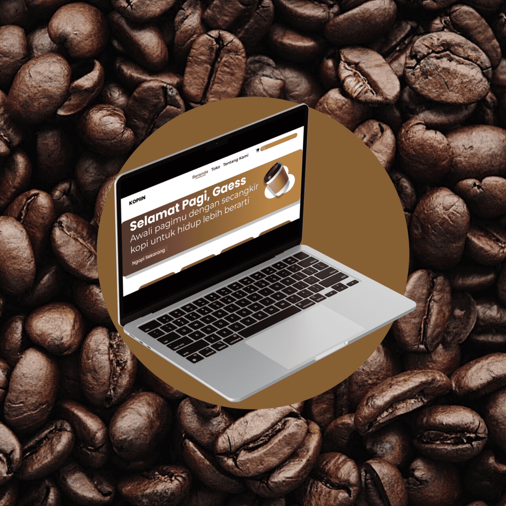

jelajahi karya saya!
PROJECT
Website PMB
Website sistem penerimaan mahasiswa baru yang responsif dan memudahkan proses pendaftaran.

Cinema POS
Aplikasi point of sale untuk bioskop membantu mengelola bisnis bioskop.
Kunjungi aplikasi live ↗Finance Tracker
Aplikasi sistem monitor keuangan pribadi untuk mengelola cashflow dan menjaga kesehatan finansial.
Kunjungi aplikasi live ↗
Tumor Otak Detection
Sistem deteksi tumor otak berbasis Machine Learning menggunakan dataset 5.000+ citra MRI Kaggle & Roboflow.
Lihat di GitHub ↗
Fire Detection YOLO
Aplikasi pendeteksi kobaran api dan asap secara real-time via webcam maupun upload foto.
Lihat di GitHub ↗
Hand Gesture AI
Menampilkan 21 titik koordinat landmark tangan secara real-time untuk mengenali gestur dan pose.
Lihat di GitHub ↗
Company Profile UPK
Platform website resmi untuk mempublikasikan profil, program kerja, dan layanan perusahaan UPK DAPM.
Kunjungi website resmi ↗Aplikasi DISAPU
Aplikasi manajemen sampah digital yang membantu warga & petugas mengatur jadwal dan rute pengangkutan.
Kunjungi disapu.com ↗
UI/UX Kopiin
Desain prototipe e-commerce kopi yang responsif, fokus pada kemudahan pemesanan dan checkout cepat.
Buka di Figma ↗
UI/UX POS Kasir
Prototipe aplikasi POS kasir resto untuk memproses antrian order, bill splitting, dan laporan penjualan.
Buka di Figma ↗